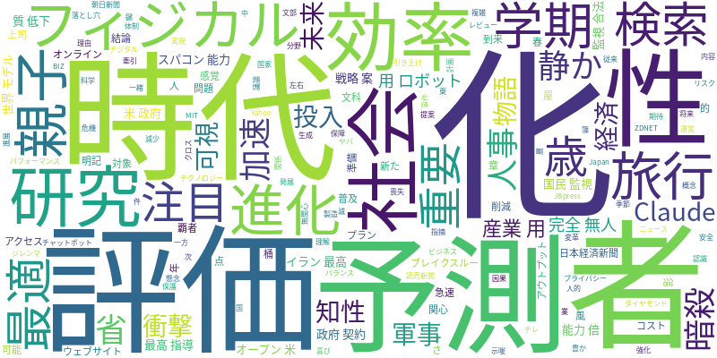

☁️ 今日のトレンドワード

📰 今日のピックアップニュース (10件)
フィジカルAIが産業用ロボットの完全無人化を牽引
フィジカルAI技術の進化により、産業用ロボットが“影の覇者”として完全無人化を実現し、製造業にブレイクスルーをもたらす可能性が示唆されています。
AIと楽しむ、親子で彩る春の旅行と新学期
AIを活用することで、親子で楽しめる旅行プランの提案や、新学期に向けた準備をより豊かに、効率的に進めることができます。AIと共に新しい季節を迎えましょう。
AI検索時代の到来、ウェブサイトは「AI最適化」が鍵
AI検索の普及により、従来のアクセス減少が懸念されています。ウェブサイト運営者には、読みやすさや結論の明記といった「AI最適化」への注目が促されています。
35歳からのAI無関心層、静かに取り残される危機
AI技術の急速な進展の中で、35歳を過ぎてAIに無関心でいると、将来的に社会から静かに取り残されてしまうリスクがあることが指摘されています。
スパコン能力10倍でAI研究加速、文科省が戦略案
文部科学省は、スパコンの能力を10倍に引き上げ、2030年までのAI活用研究を加速させる戦略案を発表しました。国の研究開発体制強化が期待されます。
AI人事評価の落とし穴、効率化と質低下のジレンマ
AI人事評価はコスト削減や効率化を進める一方、評価対象者のアウトプットの質低下や「上司に見られている」感覚の喪失といった隠れた問題点を抱えています。人的評価の重要性が再認識されています。
オープンAIと米政府契約、AIによる国民監視は合法か？
オープンAIと米政府の契約内容が、AIによる国民監視の合法性について議論を呼んでいます。プライバシー保護と国家安全保障のバランスが問われています。
軍事AIの衝撃、イラン最高指導者“暗殺”への「Claude」投入
AIチャットボット「Claude」がイラン最高指導者の暗殺計画に投入されたとされる件は、軍事分野におけるAIの利用が急速に進化し、新たな時代を迎えた衝撃を示しています。
AI新章「世界モデル」、予測知性が社会を変える
「世界モデル」と呼ばれる新たなAIの概念は、予測する知性を発展させ、社会に大きな変革をもたらす可能性を秘めています。AIの次なる進化に注目が集まります。
AIで経済の物語を可視化、未来予測の時代へ
「風が吹けば桶屋がもうかる」といった因果関係をAIで可視化することで、経済の複雑な物語を理解し、未来を予測する時代が到来しています。
今日のAI・テック業界は、産業用ロボットの完全無人化を牽引するフィジカルAIの進展、そしてAI検索時代におけるウェブサイトの「AI最適化」の重要性が浮き彫りになっています。また、AI人事評価の普及に伴う質低下の懸念や、AIによる国民監視の合法性といった倫理的な課題も議論されています。さらに、軍事分野でのAI活用や「世界モデル」といった革新的なAIの概念が登場し、AIの進化は留まることを知りません。文部科学省のスパコン能力増強計画も、今後のAI研究開発を加速させるでしょう。一方で、35歳を過ぎてAIに無関心な層が取り残されるリスクも示唆されており、AIリテラシーの重要性が増しています。AIは単なるツールに留まらず、社会構造や経済、そして私たちの生活様式そのものに深く影響を与え始めています。